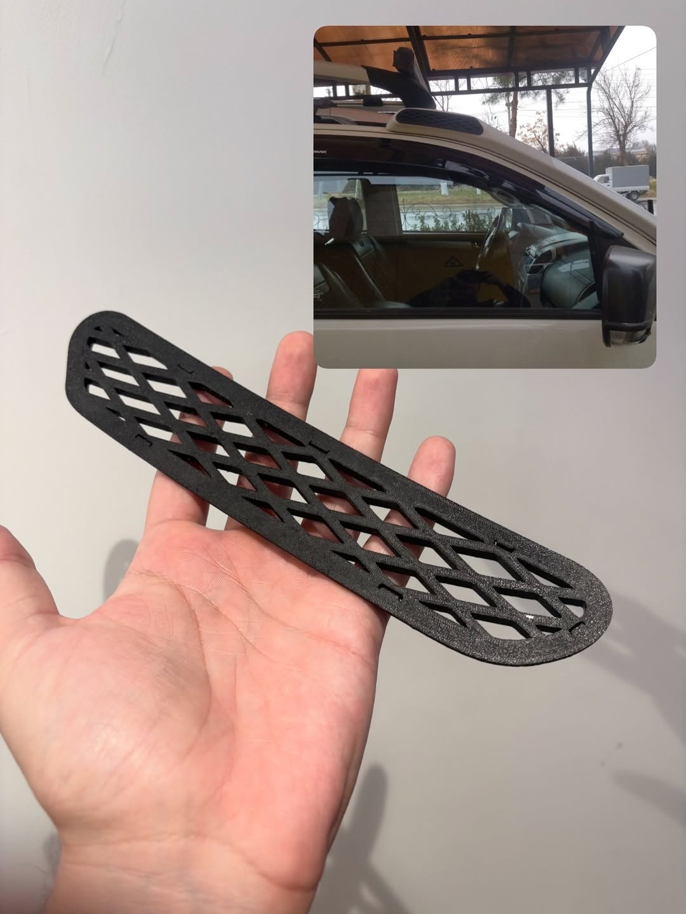

Tishli g'ildiraklar va mexanizmlar
Sanoat uchun yuqori aniqlikdagi tishli g'ildiraklar, tishli uzatmalar va boshqa mexanik qismlarni tayyorlash.
3DPie studiyasi har qanday murakkablikdagi plastik mahsulotlarni tayyorlaydi: tishli g'ildiraklar, avtoehtiyot qismlar, deflektor, prototip va korpuslar. Ishlab chiqarish Chirchiq shahrida, Toshkent va Toshkent viloyati bo'ylab yetkazib berish. Sifat, tezlik, qulay narxlar.
Buyurtma berishSanoat uchun yuqori aniqlikdagi tishli g'ildiraklar, tishli uzatmalar va boshqa mexanik qismlarni tayyorlash.
Avtomobillar uchun plastik komponentlar: maxkamlagichlar, tiqinlar, dekorativ va funksional qismlarni ishlab chiqarish.
Seriyali tarzda qismlar tayyorlash: deflektor, korpuslar, texnik mahsulotlar — har bir birlik sifati kafolatlangan.
G'oyalarni tekshirish, funksional sinovlar va loyihalarni taqdim etish uchun tez prototip va maket yaratish.
Uskunalar, maishiy texnika va mexanizmlar uchun kam uchraydigan yoki ishlab chiqarishdan olib tashlangan qismlarni tiklash va tayyorlash.
Asboblar va sanoat uskunalari uchun individual o'lchamlarda himoya korpuslarini ishlab chiqarish.
Ishlab chiqarish jihozlari, moslamalar, quyish qoliplari va ixtisoslashgan asboblar tayyorlash.

Turli materiallar va 3D chop etish texnologiyalari bilan ko'p yillik tajriba
Tayyorlangan barcha mahsulotlarga to'liq kafolat va har bir qismni nazorat qilish
Prototipdan to har qanday hajmdagi seriyali ishlab chiqarishgacha tezkor bajarish
Har bir loyiha bilan barcha texnik talablarni hisobga olgan holda shaxsan ishlaymiz
Professional 3D printerlar va ishonchli ishlab chiqaruvchilarning sifatli materiallaridan foydalanamiz
Yashirin to'lovsiz raqobatbardosh narxlar, shaffof narxlash va moslashuvchan chegirma tizimi
3D-modelni ishlab chiqishdan tortib mahsulotni yakuniy qayta ishlashgacha barcha bosqichlarda maslahat beramiz
Plastikning turli xil turlari bilan ishlaymiz: PLA, ABS, PETG, Nylon, TPU va boshqa ixtisoslashgan materiallar
Toshkent, Yunusobod
Vaqtincha yopiq
Toshkent viloyati, Chirchiq sh.,
Amir Temur ko'chasi, 62a uy
Mo'ljal: 10-avtobaza
Du-Sh: 9:00 - 21:00
Ishlab chiqarish Chirchiq shahrida (Toshkent viloyati), Amir Temur ko'chasi 62a manzilida joylashgan. Buyurtmalarni butun O'zbekiston bo'ylab qabul qilamiz: Toshkent, Chirchiq, Yangiyo'l, Angren, Olmaliq, Bekobod, Samarqand, Buxoro, Namangan, Andijon, Farg'ona. Toshkent va Toshkent viloyati bo'ylab kuryer orqali yetkazib berish mavjud.
Toshkent va Chirchiqdagi 3D chop etish narxi qism hajmi, tanlangan plastik (PLA, ABS, PETG, Nylon, TPU), shakl murakkabligi va shoshilinchligiga qarab individual hisoblanadi. Minimal buyurtma — 30 000 so'mdan. Doimiy mijozlar va ulgurji buyurtmalar uchun chegirmalar mavjud. Aniq narxni 3D-model yoki eskizni qabul qilganimizdan keyin 30 daqiqa ichida aytamiz.
Biz materiallarning keng spektri bilan ishlaymiz: PLA, ABS, PETG, Nylon, TPU va boshqa ixtisoslashgan plastiklar. Har bir material mahsulotning optimal xususiyatlarini ta'minlash uchun loyihaning aniq talablariga qarab tanlanadi.
Tayyorlash vaqti qism hajmi va murakkabligiga bog'liq. Oddiy mahsulotlar 1-2 kunda tayyor bo'lishi mumkin, murakkabroq loyihalar 3 dan 7 kungacha vaqt oladi. Ommaviy ishlab chiqarish individual ravishda muhokama qilinadi.
Ha, biz jismoniy ham, yuridik shaxslar bilan ham ishlaymiz. Barcha kerakli hujjatlar, shartnomalar va kafolatlarni taqdim etamiz. Doimiy mijozlar uchun moslashuvchan chegirma tizimi amal qiladi.
Ha, mutaxassislarimiz chizmalar, eskizlar yoki qism namunasi asosida 3D-model yaratishga yordam beradi. Modellashtirishdan tortib mahsulotni yakuniy qayta ishlashgacha to'liq xizmatlar siklini taqdim etamiz.
{kind=link}
{kind=link}
{kind=link}
{kind=link}
{kind=link}
{kind=link}
{kind=link}
{kind=link}
{kind=link}
{kind=link}
{kind=link}
{kind=link}
{kind=link}
{kind=link}
{kind=link}
{kind=link}
{kind=link}
{kind=link}
{kind=link}